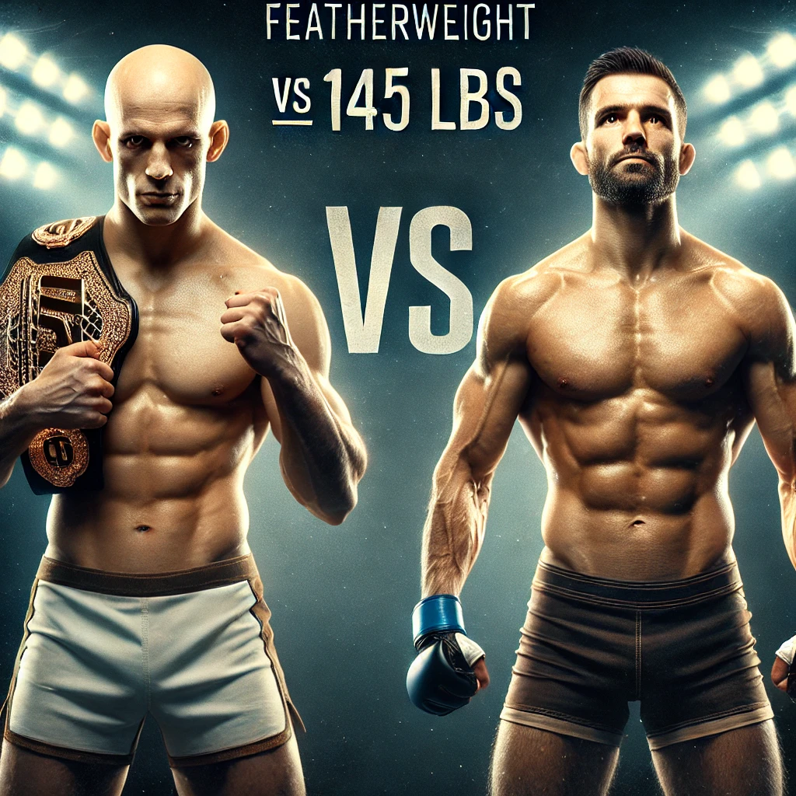

2025 UFC PICKS
A layout of my UFC picks of winter/spring term, including previous mains + future main/co
BY SAILOR RAITSES FOR CS110
UFC 311 Makhachev vs. Moicano

My pick: I believe Islam Makhachev will remain champion. While Moicano TKO’d B. Saint Denis in outstanding fashion last September, I don’t believe the fight will be even close due to him being put on 2 day short notice. I believe Makhachev will dominate and further cement his legacy..
UFC 312: Du Plessis vs. Strickland 2
I believe Du Plessis will remain champion. When these two fought last summer for the belt, I thought Strickland was robbed. Since then seeing them both fight other opponents, I don’t believe it will be as close. Du Plessis by decision.
UFC 313: Pereira vs. Ankalaev
I believe Magomed Ankalaev will beat Alex Pereira at UFC 313 due to his well-rounded skill set, which includes excellent striking, powerful kicks, and a solid wrestling game. Ankalaev's ability to control the pace of the fight and mix in takedowns could neutralize Pereira's striking advantage, especially if he can close the distance and take the fight to the ground. With his high fight IQ and ability to adapt, Ankalaev could outlast Pereira and secure a dominant win.
UFC 313 Gaethje Vs Hooker

Dan Hooker has a solid chance of beating Justin Gaethje, especially since Gaethje is coming off a tough knockout loss to Max Holloway. Hooker’s technical striking and ability to control the distance could give him an advantage, as Gaethje may be more cautious after that brutal knockout. If Hooker can avoid Gaethje’s aggressive style and capitalize on any hesitation, he could outstrike him and secure a win.
UFC 314: Volkanovski vs. Lopes
I believe Alexander Volkanovski will beat Diego Lopes due to his superior striking and fight IQ. Volkanovski's ability to maintain a high pace and mix his striking with solid defense will likely neutralize Lopes' attacks. Lopes might bring a unique challenge with his submission game, but Volkanovski’s experience and all-around skill set should allow him to control the fight and secure a win.
UFC 315: Muhammad vs. Della Maddalena
I believe Jack Della Maddalena will beat Belal Muhammad because of his sharp striking and finishing ability. His clean, quick hands and powerful punches should give him the edge in a stand-up battle. If he can avoid Muhammad’s wrestling and keep the fight on the feet, I see Della Maddalena outstriking him and potentially securing a finish.